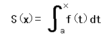
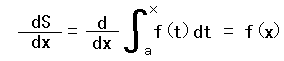

The Fundamental Theorem of Calculus
Introduction
If f(x) is continuous on [a,b],then the funcion

has a derivative at every point in [a,b], and

Applet
How to use this applet
1.Check "Unconstant function" or "Constant function".
2.Press "Increase x" or "Decrease x" button.
3.Press "Increase dx" or "Decrease dx" button.
4.Press "Next" button to go to next step.
5.Press "Limit" button to watch dS/dx.